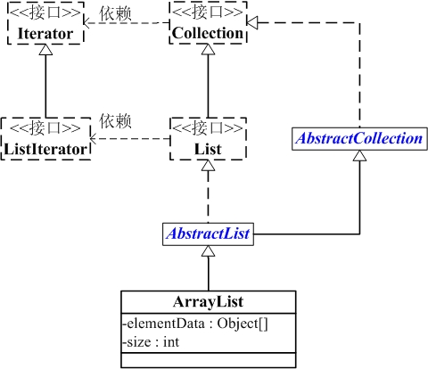
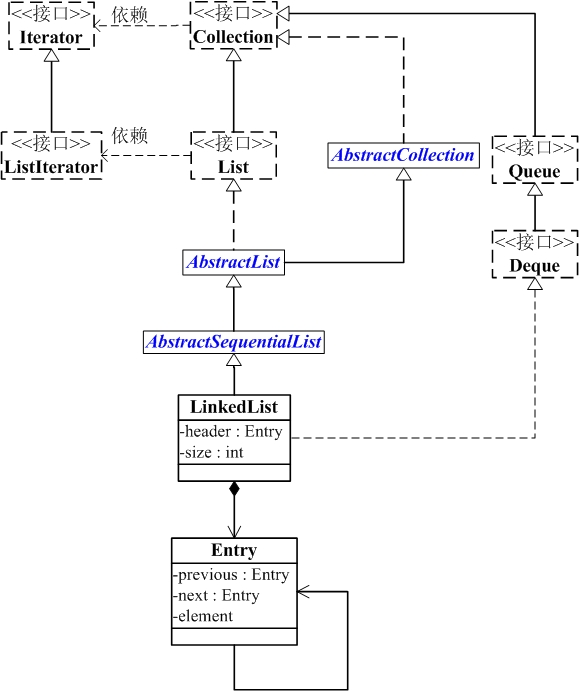
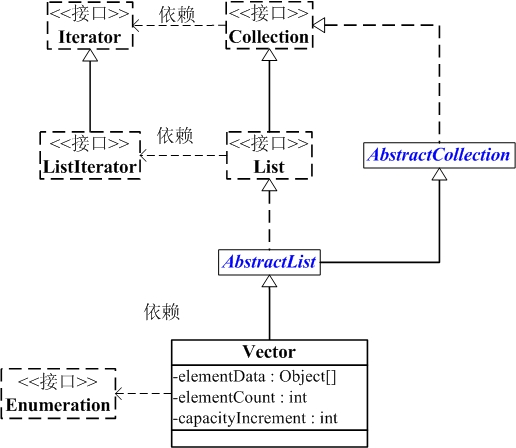
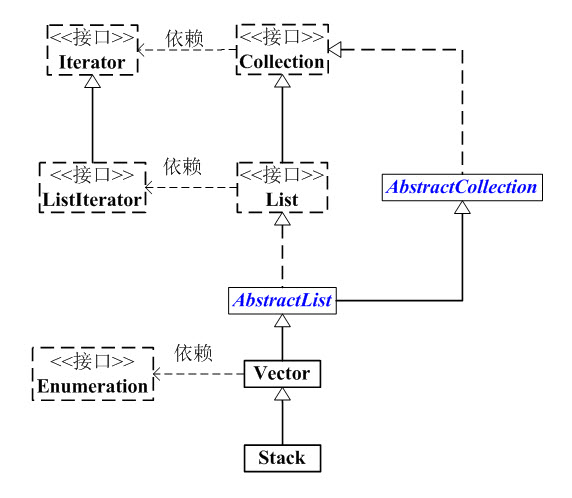
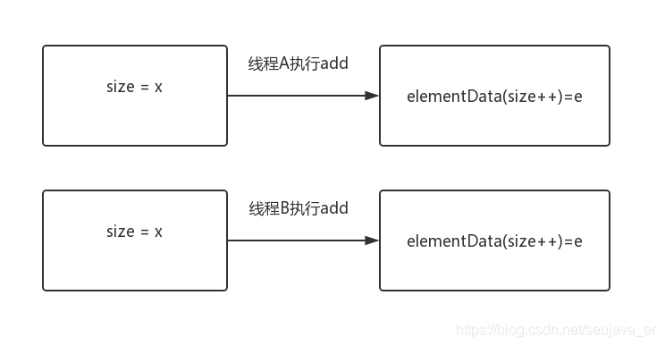

- 1. List介绍
- 2. List接口中常用方法
- 3. ArrayList集合
- 4. fail-fast机制
- 5.LinkedList
- 6. Vector
- 7. Stack
- 8. List总结分析
- 9.LinkedList和ArrayList性能差异分析
- 10.ArrayList 的并发问题
- 11. Vector和ArrayList比较
List是Collection接口的子接口

1. List介绍
java.util.List接口继承自Collection接口，是单列集合的一个重要分支，习惯性地会将实现了List接口的对象称为List集合。
- 有序
- 有索引，通过索引就可以精确的操作集合中的元素
- 允许有重复的元素，通过元素的
equals()方法，来比较是否为重复的元素
2. List接口中常用方法
List继承了Collection接口中的全部方法，而且还增加了一些根据元素索引来操作集合的特有方法，如下：
public void add(int index, E element): 将指定的元素，添加到该集合中的指定位置上。public E get(int index):返回集合中指定位置的元素。public E remove(int index): 移除列表中指定位置的元素, 返回的是被移除的元素。public E set(int index, E element):用指定元素替换集合中指定位置的元素,返回值的更新前的元素。
3. ArrayList集合
3.1 介绍
ArrayList 是一个数组队列，相当于 动态数组， 容量能动态增长。
它继承于AbstractList，实现了List, RandomAccess, Cloneable, java.io.Serializable这些接口。
- ArrayList 继承了
AbstractList，实现了List。它是一个数组队列，提供了相关的添加、删除、修改、遍历等功能。 - ArrayList 实现了
RandmoAccess接口，即提供了随机访问功能。RandomAccess是java中用来被List实现，为List提供快速访问功能的。在ArrayList中，我们即可以通过元素的序号快速获取元素对象；这就是快速随机访问。
- ArrayList 实现了
Cloneable接口，即覆盖了函数clone()，能被克隆。 - ArrayList 实现
java.io.Serializable接口，这意味着ArrayList支持序列化，能通过序列化去传输。
注意：
和Vector不同，ArrayList中的操作不是线程安全的！所以，建议在单线程中才使用ArrayList，而在多线程中可以选择Vector或者CopyOnWriteArrayList。
ArrayList默认的大小是10，当由于增加数据导致容量不足时，容量会添加上一次容量大小的一半。
3.2 数据结构
1 | public class ArrayList<E> extends AbstractList<E> |
ArrayList与Collection关系如下图：

ArrayList包含了两个重要的对象：elementData 和 size。
- elementData:Object[]类型的数组，它保存了添加到ArrayList中的元素。是个动态数组，容量默认是10，具体的增长方式，请参考源码分析中的
ensureCapacity()函数 - size ：则是动态数组的实际大小。
总结如下：
- ArrayList 实际上是通过一个数组去保存数据的。当我们构造ArrayList时；若使用默认构造函数，则ArrayList的默认容量大小是10。
- 当ArrayList容量不足以容纳全部元素时，ArrayList会重新设置容量：新的容量=“(原始容量x3)/2 + 1”。
- ArrayList的克隆函数，即是将全部元素克隆到一个数组中。
- ArrayList实现java.io.Serializable的方式。当写入到输出流时，先写入“容量”，再依次写入“每一个元素”；当读出输入流时，先读取“容量”，再依次读取“每一个元素”。
3.3 遍历方式
迭代器 遍历
Integer value = null; Iterator iter = list.iterator(); while (iter.hasNext()) { value = (Integer)iter.next(); } <!--1-->
forach遍历
1 | Integer value = null; |
遍历ArrayList时，使用随机访问(即，通过索引序号访问)效率最高，而使用迭代器的效率最低！
3.3 toArray（）异常
当我们调用ArrayList中的 toArray()，可能遇到过抛出“java.lang.ClassCastException”异常的情况。下面我们说说这是怎么回事。
调用 toArray() 函数会抛出“java.lang.ClassCastException”异常，但是调用 toArray(T[] contents) 能正常返回 T[]。
toArray() 会抛出异常是因为 toArray() 返回的是 Object[] 数组，将 Object[] 转换为其它类型(如如，将Object[]转换为的Integer[])则会抛出“java.lang.ClassCastException”异常，因为Java不支持向下转型。具体的可以参考前面ArrayList.java的源码介绍部分的toArray()。
解决该问题的办法是调用
调用 toArray(T[] contents) 返回T[]的可以通过以下几种方式实现。
1 | // toArray(T[] contents)调用方式一 |
4. fail-fast机制
4.1 简介
fail-fast 机制是java集合(Collection)中的一种错误机制。当多个线程对同一个集合的内容进行操作时，就可能会产生fail-fast事件。
例如：当某一个线程A通过iterator去遍历某集合的过程中，若该集合的内容被其他线程所改变了；那么线程A访问集合时，就会抛出ConcurrentModificationException异常，产生fail-fast事件。
实例代码：
1 | package fail_fast; |
运行结果：
1 | 0, 10, |
结果说明：
- FastFailTest中通过 new ThreadOne().start() 和 new ThreadTwo().start() 同时启动两个线程去操作list。
ThreadOne线程：向list中依次添加0,1,2,3,4,5。每添加一个数之后，就通过printAll()遍历整个list。
ThreadTwo线程：向list中依次添加10,11,12,13,14,15。每添加一个数之后，就通过printAll()遍历整个list。 - 当某一个线程遍历list的过程中，list的内容被另外一个线程所改变了；就会抛出ConcurrentModificationException异常，产生fail-fast事件。
4.2解决办法
fail-fast机制，是一种错误检测机制。它只能被用来检测错误，因为JDK并不保证fail-fast机制一定会发生。
若在多线程环境下使用fail-fast机制的集合，建议使用“java.util.concurrent包下的类”去取代“java.util包下的类”。
1 | private static List<String> list = new ArrayList<String>(); |
替换为
1 | private static List<String> list = new CopyOnWriteArrayList<String>(); |
则可以解决该办法。
4.3 原理
fail-fast事件是通过抛出ConcurrentModificationException异常来触发的。
ArrayList是如何抛出ConcurrentModificationException异常的呢?
1 | package java.util; |
查看源码可以发现，当我们调用 next() 和 remove()时，都会执行 checkForComodification()。若 “modCount 不等于 expectedModCount”，则抛出ConcurrentModificationException异常，产生fail-fast事件。无论是add()、remove()，还是clear()，只要涉及到修改集合中的元素个数时，都会改变modCount的值。
- 当多个线程对同一个集合进行操作的时候，某线程访问集合的过程中，该集合的内容被其他线程所改变(即其它线程通过add、remove、clear等方法，改变了modCount的值)；这时，就会抛出ConcurrentModificationException异常，产生fail-fast事件。
4.4 CopyOnWriteArrayList是怎么避免的
1 | public class CopyOnWriteArrayList<E> |
- 和ArrayList继承于AbstractList不同，CopyOnWriteArrayList没有继承于AbstractList，它仅仅只是实现了List接口。
- ArrayList的iterator()函数返回的Iterator是在AbstractList中实现的；而CopyOnWriteArrayList是自己实现Iterator。
- ArrayList的Iterator实现类中调用next()时，会“调用checkForComodification()比较
expectedModCount和modCount的大小”；但是，CopyOnWriteArrayList的Iterator实现类中，没有所谓的checkForComodification()，更不会抛出ConcurrentModificationException异常！
5.LinkedList
5.1 基本介绍
1 | public class LinkedList<E> |
- LinkedList 是一个继承于AbstractSequentialList的双向链表。它也可以被当作堆栈、队列或双端队列进行操作。（JDK1.6 之前为循环链表，JDK1.7 取消了循环。)
- LinkedList 实现 List 接口，能对它进行队列操作。
- LinkedList 实现
Deque接口，即能将LinkedList当作双端队列使用 - LinkedList 实现了Cloneable接口，即覆盖了函数clone()，能克隆。
- LinkedList 实现java.io.Serializable接口，这意味着LinkedList支持序列化，能通过序列化去传输。
- LinkedList 是非同步的。

LinkedList的本质是双向链表。
- LinkedList继承于AbstractSequentialList，并且实现了Dequeue接口。
- LinkedList包含两个重要的成员：
header和size。header是双向链表的表头，它是双向链表节点所对应的类Entry的实例。Entry中包含成员变量： previous, next, element。其中，previous是该节点的上一个节点，next是该节点的下一个节点，element是该节点所包含的值。size是双向链表中节点的个数。
5.2源码分析
LinkedList实际上是通过双向链表去实现的。既然是双向链表，那么它的顺序访问会非常高效，而随机访问效率比较低。
LinkedList是如何实现List的这些接口的，如何将“双向链表和索引值联系起来的”？
通过一个计数索引值来实现的。例如，当我们调用get(int location)时，首先会比较“location”和“双向链表长度的1/2”；若前者大，则从链表头开始往后查找，直到location位置；否则，从链表末尾开始先前查找，直到location位置。这就是“双线链表和索引值联系起来”的方法。
总结：
LinkedList 实际上是通过双向链表去实现的。
它包含一个非常重要的内部类：Entry。Entry是双向链表节点所对应的数据结构，它包括的属性有：当前节点所包含的值，上一个节点，下一个节点。
从其的实现方式中可以发现，它不存在LinkedList容量不足的问题。
LinkedList的克隆函数，即是将全部元素克隆到一个新的LinkedList对象中。
LinkedList实现java.io.Serializable。当写入到输出流时，先写入“容量”，再依次写入“每一个节点保护的值”；当读出输入流时，先读取“容量”，再依次读取“每一个元素”。
由于LinkedList实现了Deque，而Deque接口定义了在双端队列两端访问元素的方法。提供插入、移除和检查元素的方法。每种方法都存在两种形式：一种形式在操作失败时抛出异常，另一种形式返回一个特殊值（null 或 false，具体取决于操作）。
1
2
3
4
5第一个元素（头部） 最后一个元素（尾部）
抛出异常 特殊值 抛出异常 特殊值
插入 addFirst(e) offerFirst(e) addLast(e) offerLast(e)
移除 removeFirst() pollFirst() removeLast() pollLast()
检查 getFirst() peekFirst() getLast() peekLast()LinkedList可以作为FIFO(先进先出)的队列，作为FIFO的队列时，下表的方法等价：
队列方法 等效方法
add(e) addLast(e)
offer(e) offerLast(e)
remove() removeFirst()
poll() pollFirst()
element() getFirst()
peek() peekFirst()LinkedList可以作为LIFO(后进先出)的栈，作为LIFO的栈时，下表的方法等价：
1
2
3
4栈方法 等效方法
push(e) addFirst(e)
pop() removeFirst()
peek() peekFirst()
5.3 LinkedList支持的遍历方式
通过迭代器遍历。即通过Iterator去遍历。
通过快速随机访问遍历LinkedList
1
2
3
4int size = list.size();
for (int i=0; i<size; i++) {
list.get(i);
}通过foreach来遍历
通过pollFirst()来遍历
1
2while(list.pollFirst() != null)
;通过pollLast()来遍历
1
2while(list.pollLast() != null)
;通过removeFirst()来遍历
1
2
3
4
5try {
while(list.removeFirst() != null)
;
} catch (NoSuchElementException e) {
}通过removeLast()来遍历
1
2
3
4
5try {
while(list.removeLast() != null)
;
} catch (NoSuchElementException e) {
}
遍历LinkedList时，使用removeFist()或removeLast()效率最高。但用它们遍历时，会删除原始数据；若单纯只读取，而不删除，应该使用第3种foreach遍历方式。
直接用索引去访问列表元素的方法是最慢的，
6. Vector
Vector 是矢量队列，它是JDK1.0版本添加的类。继承于AbstractList，实现了List, RandomAccess, Cloneable这些接口。
1 | public class Vector<E> |
Vector 继承了
AbstractList，实现了List；所以，它是一个队列，支持相关的添加、删除、修改、遍历等功能。Vector 实现了
RandmoAccess接口，即提供了随机访问功能。RandmoAccess是java中用来被List实现，为List提供快速访问功能的。在Vector中，我们即可以通过元素的序号快速获取元素对象；这就是快速随机访问。
Vector 实现了Cloneable接口，即实现clone()函数。它能被克隆。
和ArrayList不同，Vector中的操作是线程安全的。
6.1数据结构

Vector的数据结构和ArrayList差不多，它包含了3个成员变量：elementData , elementCount， capacityIncrement。
- elementData 是”Object[]类型的数组”，它保存了添加到Vector中的元素。elementData是个动态数组，如果初始化Vector时，没指定动态数组的>大小，则使用默认大小10。随着Vector中元素的增加，Vector的容量也会动态增长，capacityIncrement是与容量增长相关的增长系数，具体的增长方式，请参考源码分析中的ensureCapacity()函数。
- elementCount 是动态数组的实际大小。
- capacityIncrement 是动态数组的增长系数。如果在创建Vector时，指定了capacityIncrement的大小；则，每次当Vector中动态数组容量增加时>，增加的大小都是capacityIncrement。
6.2 源码分析
- Vector实际上是通过一个数组去保存数据的。当我们构造Vecotr时；若使用默认构造函数，则Vector的默认容量大小是10。
- 当Vector容量不足以容纳全部元素时，Vector的容量会增加。若容量增加系数 >0，则将容量的值增加“容量增加系数”；否则，将容量大小增加一倍。
- Vector的克隆函数，即是将全部元素克隆到一个数组中。
6.3 遍历方式
通过迭代器遍历。
随机访问，通过索引值去遍历。由于Vector实现了RandomAccess接口，它支持通过索引值去随机访问元素。
增强型foreach
Enumeration遍历
1
2
3
4
5Integer value = null;
Enumeration enu = vec.elements();
while (enu.hasMoreElements()) {
value = (Integer)enu.nextElement();
}
效率对比：
遍历Vector，使用索引的随机访问方式最快，使用迭代器最慢。
7. Stack
Stack是栈。它的特性是：先进后出(FILO, First In Last Out)。
1 | public |
java工具包中的Stack是继承于Vector(矢量队列)的，由于Vector是通过数组实现的，这就意味着，Stack也是通过数组实现的，而非链表。

总结如下：
Stack实际上也是通过数组去实现的。
执行push时(即，将元素推入栈中)，是通过将元素追加的数组的末尾中。
执行peek时(即，取出栈顶元素，不执行删除)，是返回数组末尾的元素。
执行pop时(即，取出栈顶元素，并将该元素从栈中删除)，是取出数组末尾的元素，然后将该元素从数组中删除。
Stack继承于Vector，意味着Vector拥有的属性和功能，Stack都拥有。
8. List总结分析
8.1 List框架分析
- List 是一个接口，它继承于Collection的接口。它代表着有序的队列。
- AbstractList 是一个抽象类，它继承于AbstractCollection。AbstractList实现List接口中除size()、get(int location)之外的函数。
- AbstractSequentialList 是一个抽象类，它继承于AbstractList。AbstractSequentialList 实现了“链表中，根据index索引值操作链表的全部函数”。
- ArrayList, LinkedList, Vector, Stack是List的4个实现类。
- ArrayList 是一个数组队列，相当于动态数组。它由数组实现，随机访问效率高，随机插入、随机删除效率低。
- LinkedList 是一个双向链表。它也可以被当作堆栈、队列或双端队列进行操作。LinkedList随机访问效率低，但随机插入、随机删除效率低。
- Vector 是矢量队列，和ArrayList一样，它也是一个动态数组，由数组实现。但是ArrayList是非线程安全的，而Vector是线程安全的。
- Stack 是栈，它继承于Vector。它的特性是：先进后出(FILO, First In Last Out)。
8.2 使用场景
对于需要快速插入，删除元素，应该使用LinkedList。
对于需要快速随机访问元素，应该使用ArrayList。
对于“单线程环境” 或者 “多线程环境，但List仅仅只会被单个线程操作”，此时应该使用非同步的类(如ArrayList)。
对于“多线程环境，且List可能同时被多个线程操作”，此时，应该使用同步的类(如Vector)。
9.LinkedList和ArrayList性能差异分析
为什么为什么LinkedList中插入元素很快，而ArrayList中插入元素很慢！
- 通过add(int index, E element)向LinkedList插入元素时。先是在双向链表中找到要插入节点的位置index；找到之后，再插入一个新节点。
双向链表查找index位置的节点时，有一个加速动作：若index < 双向链表长度的1/2，则从前向后查找; 否则，从后向前查找。 - 而ArrayList的add(int index, E element)函数，会引起index之后所有元素的改变，因此慢。
为什么LinkedList中随机访问很慢，而ArrayList中随机访问很快？
- 通过get(int index)获取LinkedList第index个元素时。先是在双向链表中找到要index位置的元素；找到之后再返回。
双向链表查找index位置的节点时，有一个加速动作：若index < 双向链表长度的1/2，则从前向后查找; 否则，从后向前查找。 - 通过get(int index)获取ArrayList第index个元素时。直接返回数组中index位置的元素，而不需要像LinkedList一样进行查找。
内存空间占用： ArrayList 的空 间浪费主要体现在在 list 列表的结尾会预留一定的容量空间，而 LinkedList 的空间花费则体现在它的每一个元素都需要消耗比 ArrayList 更多的空间（因为要存放直接后继和直接前驱以及数据）。
10.ArrayList 的并发问题
10.1 扩容
ArrayList的并发问题其中一个来源于它的扩容机制，扩容的时候，如果在并发操作ArrayList的时候，可能会有数组索引越界的异常产生。

线程A和线程B获取的size都是9，线程A先插入元素e，这个时候elementData数组的大小为10，是正常情况下下次应该是要扩容的，但是线程B获取的size=9而不是10，在线程B中没有进行扩容，而是报出数组index越界异常。
10.2 add操作
add操作中先进行扩容操作ensureCapacity(size+1)，之后才添加数据到elementData这个数组的末端，但是这样的操作不是线程安全的，多线程操作的时候可能会出现数据覆盖的问题。
示例如下：

线程A执行了ArrayList的add方法，由于线程B获取到的size大小和线程A是一样的，此时的size大小应该是比原来的size要大1，但是B线程不知，所以B线程进行赋值的时候把A线程的值给覆盖，导致添加到数组中元素的个数其实是比逻辑上要少的。
10.3 如何避免？
使用
Collections.synchronizedList()方法对ArrayList对象进行包装1
ArrayList<Integer> arraylist = Collections.synchronizedList(new ArrayList());
使用并发容器CopyOnWriteArrayList
从add方法知道：CopyOnWriteArrayList底层数组的扩容方式是一个一个地增加，而且每次把原来的元素通过Arrays.copy()方法copy到新数组中，然后在尾部加上新元素e.它的底层并发安全的保证是通过ReentrantLock进行保证的，CopyOnWriteArrayList和SynchronizedList的底层实现方式是不一样的，前者是通过Lock机制进行加锁，而后者是通过Synchronized进行加锁，
11. Vector和ArrayList比较
相同点：
- 它们都继承于AbstractList，并且实现List接口
- 都实现了RandomAccess和Cloneable接口，意味着它们都支持快速随机访问；能克隆自己。
- 都是通过数组实现的，本质上都是动态数组
- 默认数组容量是10
- 都支持Iterator和listIterator遍历
不同点：
ArrayList是非线程安全； 而Vector是线程安全的，
ArrayList支持序列化，而Vector不支持；
ArrayList有3个构造函数，而Vector有4个构造函数。
Vector除了包括和ArrayList类似的3个构造函数之外，另外的一个构造函数可以指定容量增加系数。
容量增加方式不同：
逐个添加元素时，若ArrayList容量不足时，“新的容量”=“(原始容量x3)/2 + 1”。
而Vector的容量增长与“增长系数有关”，若指定了“增长系数”，且“增长系数有效(即，大于0)”；那么，每次容量不足时，“新的容量”=“原始容量+增长系数”。若增长系数无效(即，小于/等于0)，则“新的容量”=“原始容量 x 2”。
Vector支持通过Enumeration去遍历，而List不支持